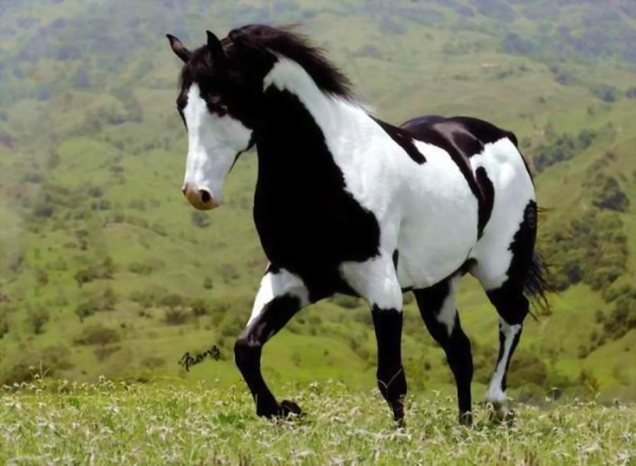

Pampa
O cavalo pampa é uma raça de cavalos originária do Brasil.
Recebeu este nomde devido á sua característica pelagem malhada, conhecida como pelagem pampa.
| Características | |
| Andamento | marcha batida, marcha picada, marcha de centro, marcha trotada e trote |
| Altura | varia entre 1,45 e 1,55 m na cernelha |
| Tronco | corpo bem fornecido e musculoso, com uma estrutura robusta e compacta |
| Pelagem | o pelo é geralmente curto e denso, adequado às condições climáticas variadas da região dos Pampas |
| Temperamento | equilibrado |